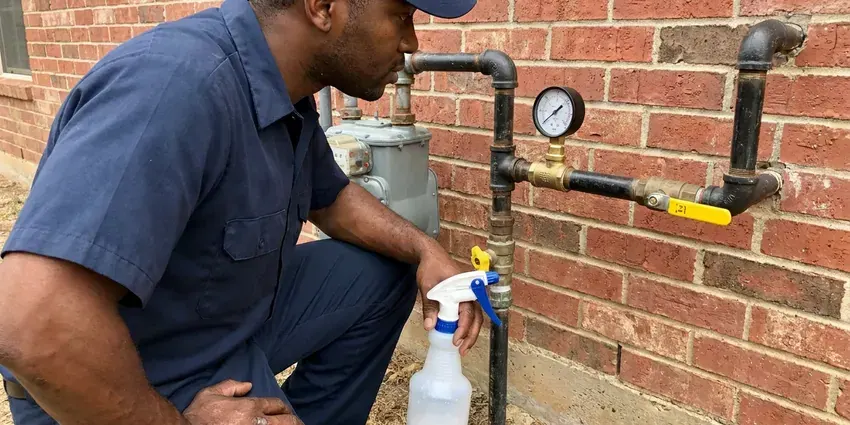

Sewer Repair in Dublin, OH
Clay, cast iron, Orangeburg or PVC, HRL Plumbing repairs main sewer lines across Dublin, OH after we see the problem on video.
- Trench Compacted and Cleaned Up
- Licensed Ohio Plumbers
- Licensed Ohio Plumbing Contractor
- Trenchless Options

Sagging, Cracked or Clogged Sewer Pipe? We Repair It in Dublin, OH
You see the crack or root mass on screen before you approve anything.
Cracked, Rooted and Sagging Sewer Lines in Dublin, OH
HRL Plumbing repairs the main sewer line that runs from your house to the public main or septic tank in Dublin, OH. We start at the cleanout with a camera. The camera head carries a sonde, so we can mark the depth and location of every crack, root mass or sag on the surface before we talk about price. Then you get a written quote for each repair option.
Some of what we do:
- Code-compliant tie-ins at the city tap
- Root Cutting and Hydro-Jetting
- Sewer Camera Inspection With Depth Locating

Additional Plumbing Repair Services in Dublin, OH
We offer expert plumbing repair services across Dublin, OH to fix leaks, restore flow, and keep your system running smoothly.


Customers
Why Choose HRL Plumbing for Sewer Repair in Dublin, OH?
Sewer work is messy and you will be living with it for a day or two. We work to keep it brief. Plywood goes down on the lawn, spoils go on tarps, and the crew lets you know exactly which drains are safe to run during the repair.
- Right-Sized Fixes, We replace one bad joint when one joint is the problem, instead of selling a new line.
- Video Proof, You see the crack, root mass or belly on screen before any work is approved.
- Licensed Plumbers, Licensed Ohio plumbers do the work from camera to connection.
Citywide Coverage
Whether your house ties into a city main at the street or a septic tank out back, our crew covers the whole Dublin area. Lateral depth changes from block to block. We know roughly how deep lines run in local soil, which helps us plan the dig and the shoring before we arrive.
Experienced Team
Our sewer techs have repaired thousands of feet of main line in clay, cast iron, ABS and Orangeburg. They know the footage cold. A tech who has seen hundreds of lines can tell a belly from a break or a root mass from a grease plug in seconds, and that experience is what keeps the repair pointed at the actual problem.
Safety-First Approach
All repairs are completed to the plumbing code your city has adopted. Fall, fittings and bedding all follow code. When a permit is required we pull it, schedule the inspection, and leave the trench open until the work passes.
Trusted Certified Dublin Plumbing Services Professionals
At HRL Plumbing, we take pride in licensed, certified plumbing services throughout Dublin, OH. Credentials matter in this trade. Our plumbers hold recognized industry credentials, and they follow strict safety and quality rules on every repair, installation and maintenance call we run.
Call Us Now PHCC Plumbing Contractor Recognition
PHCC Plumbing Contractor Recognition Better Business Bureau (BBB) Accreditation
Better Business Bureau (BBB) Accreditation Angi Certified Pro
Angi Certified Pro ISO 9001 Quality Management Certification
ISO 9001 Quality Management CertificationSewer Repair, Job by Job in Dublin, OH
Tree Root Invasion Solutions in Dublin
Roots in a sewer line are not the tree's fault. The pipe was leaking first. Warm, wet, nutrient-rich air escaping from a loose joint draws roots toward the line, and once they get in they thicken until they crack the pipe or separate the joint completely. We cut them out, then talk about the long-term fix. Lining or a joint replacement keeps them from coming back.

Sewer Vent Pipe Repair in Dublin, OH
A plugged vent makes drains gurgle and traps run dry. Then the sewer smell shows up. Bird nests, leaves and ice can block a roof vent, and older galvanized or cast iron vent stacks crack inside the walls where nobody sees them, so we check the vent any time the drains act up but the main line looks clean. Fixes range from a quick clearing to a new section of stack.
Restaurant and Retail Sewer Repair in Dublin
Restaurants, retail centers and multifamily buildings load a lateral far beyond a single house. Grease is the usual culprit. We jet the line, camera it, and repair the weak section with options that limit how long you are closed, such as overnight work or temporary bypass pumps that keep the building running. A two-way cleanout usually goes in at the same time.
Orangeburg and Cast Iron Sewer Replacement in Dublin
Orangeburg is wood fiber soaked in coal tar. Over decades it goes oval and blisters. Cast iron from the same era rusts from the inside, builds scale and eventually splits along the bottom where the sewage runs, and once the camera shows failures along the whole run, patching it stops being worth the money. We replace these lines with PVC. Trenchless bursting is often an option.
Sewer Line Backups & Blockages in Dublin
Water coming up in the tub when the washer drains is a classic main line symptom. The clog is past the branches. We clear it from the nearest cleanout, then run the camera to see what caused it, since a grease clog and a root mass need very different fixes. Older Ohio homes with clay lines often show roots right at the joints. You get the footage either way.
Video Camera Sewer Inspection in Dublin
A self-leveling camera goes in at the cleanout or through a pulled toilet. We record the whole run. Cracks, root intrusion, offset joints and standing water all show up on the screen, and the sonde in the camera head lets us mark the exact spot and depth on the ground above, which keeps the dig to one small pit. Older homes in Dublin often hide two or three problems in one line, and the footage shows every one.
Emergency Sewer Repair in Dublin
Raw sewage on a basement floor is not a next-week problem. Our phone is answered after hours. The first goal on an emergency call is to get the line flowing, usually with a cable or jetter, and then camera it to find out whether you have a clog or a structural failure that will back up again tomorrow. Sometimes the permanent fix waits for daylight. Until then, we tell you which fixtures are safe to use.

Bellied Sewer Line Correction in Dublin, OH
A belly is a low spot where the pipe has sagged and holds standing water. Paper and solids settle there. Heavy clay soils are common in Ohio, and they hold water and shift with the seasons, stressing foundations and sewer lines. We measure the depth of standing water on camera, dig out that section, re-bed the pipe on compacted gravel and reset the slope to the quarter inch per foot most codes call for on residential laterals. Not every sag needs digging, and we will tell you which yours is.
Sewer Repair Near Me in Dublin, OH
Local matters on a sewer job because the city inspection, the right-of-way rules and the depth of the public main vary from place to place. This is our home market. That keeps permit timing predictable. We already know how the inspection office runs.
Our Dublin crew knows how deep laterals usually run around here and which neighborhoods still have clay or cast iron. That shortens the job. It also means fewer surprises when the trench is open, since we already expect the transition fittings and bedding the old pipe will need.
HRL Plumbing at a Glance
- Fully licensed plumbing team covering Dublin, OH
- Same-day appointments and 24/7 emergency response
- Upfront, flat-rate pricing before work begins
- 4.9-star rated by 673+ Ohio customers
Dublin Map
Dublin Information
- Population
- 48,923
- Area codes
- 614/740/380
- Service area
- Dublin and communities within 40 miles
- Nearby
- Columbus, Springfield, Newark, Mansfield
A main sewer line in Dublin, OH can crack, sag or fill with roots long before anyone notices, and a camera is the only honest way to tell which.
Expert Services
Call HRL Plumbing for honest, reliable plumbing from people who know the trade in Dublin, OH.
Our Specialized Plumbing Services in Dublin, OH
At HRL Plumbing, you get every kind of plumbing service from one company across Dublin, OH. From leak detection to full system installs, our team works fast and charges fair prices on homes and commercial properties alike. Explore our core services below:


How a Sewer Repair Goes in Dublin, OH
We show you the problem before we price it, and we test the repair before we backfill.
Call and Describe the Problem
Phone HRL Plumbing at (740) 449-7505 and tell us which drains are acting up. We will ask a few questions and book a time.
Camera and Quote
A tech runs a camera through the line, marks the problem on the ground and gives you a written price for each repair option.
Repair & Test
Once you approve, we make the repair, run water through it and check it on camera, then backfill.
Frequently Asked Questions About Sewer Repair in Dublin
Clearing a clog can be as little as $300. Broken pipe is another matter. Replacing a long run with trenchless methods can run $6,000 or higher, because the price climbs with footage, pipe material, access and whether any excavation is needed at all. You get a firm number after we camera the line.
Multiple drains backing up at once is the big one. Watch the tub. Water rising in the shower when the washer drains, a sewage smell near the cleanout, and wet or very green patches over the line are all signs the main lateral is blocked, cracked or separated somewhere between the house and the street. Video makes it certain.
Standard policies usually exclude the pipe itself. Age and root damage are excluded. They may cover water damage inside the house that resulted from the backup, and a few carriers offer an add-on that covers the line from the house to the street. Check your policy for that rider. We give you video and a written report for the claim.
Fixing the cause, not just the clog. Roots come back if the joint stays open. After a repair, we recommend a camera check in a year or two on older lines, especially if the rest of the run is clay or cast iron that could develop the same problem somewhere else. Watch what goes down the drains.
Clay, cast iron, ABS, PVC and Orangeburg all come up in Dublin and around Ohio. We work on all five. Joining new PVC to old clay or cast iron takes a shielded transition coupling sized to the outside diameter of each pipe, and getting that fitting right is what keeps the repair from leaking at the joint later. The usual couplings ride on the truck.
Yes. We put the labor warranty on paper. The PVC pipe and fittings carry their own manufacturer coverage, and lining products come with long-term warranties from the liner maker, which means both the parts and our labor are covered. You will see the exact terms before you sign.
Schedule 40 PVC is our standard for open trench work. PVC will not corrode. For pipe bursting we use fused HDPE, which comes in continuous lengths with no joints for roots to find, and for lining we use epoxy liners rated for decades of service inside the old pipe. We follow what your city's code allows.
Major repairs and replacements in Dublin, OH usually require one. Minor work can be exempt. Rules differ on whether a short spot repair on private property needs a permit, while work at the street or the public tap nearly always needs one. We confirm the requirement before we start.
What Our Customers Say About Our Plumbing Experts

Lisa C.
Water was pouring out from under the washing machine on a holiday weekend. HRL Plumbing talked me through closing the valves over the phone and had a plumber at the house within ninety minutes. It was a burst fill hose.
Emergency Plumbing · Dublin, OH
Carlos V.
Our house still had galvanized pipe, and upstairs the shower was a trickle. The crew repiped everything in PEX over three days and patched every drywall hole before they left. The pressure difference is night and day.
Repiping · Springfield, OH
Monica A.
Our water bill nearly doubled in one month with no change in how we used water. The tech checked the meter, heard the leak under the hallway with his equipment, and opened a hole about a foot square. Fixed the same day.
Slab Leak Repair · Dublin, OH
Patricia H.
We had a slab leak that two other companies could not find. HRL Plumbing located it in under an hour with a listening device. They rerouted the line through the attic instead of breaking up the floor, so we kept our kitchen tile.
Slab Leak Repair · Newark, OHSofia M.
Two new toilets went in during one visit. The tech set them on new wax rings and swapped the old supply lines. He also noticed our bathroom faucet dripping and replaced the cartridge while he was there. No mess left behind.
Toilet Installation · Dublin, OHKaren W.
After our third pinhole leak in copper, we stopped patching. HRL Plumbing gave us a written plan room by room and repiped the house in PEX while we stayed in it. The crew covered our floors every morning and cleaned up every night.
Repiping · Mansfield, OH